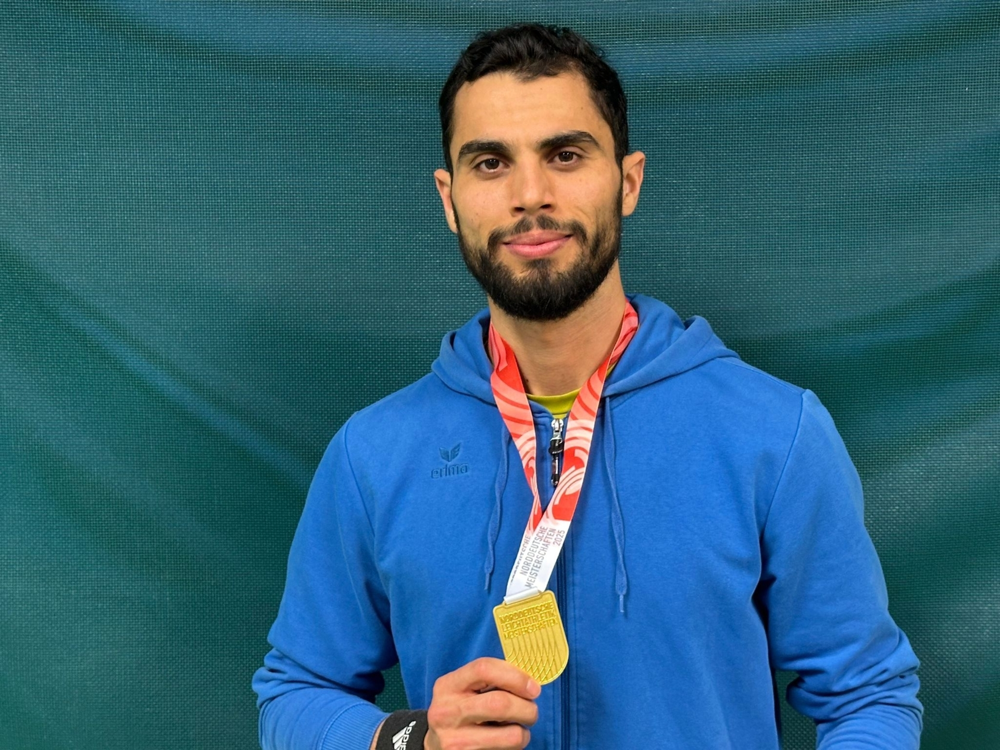

ATHLETE · AC-BERLIN
Mohammad Amin Alsalami
A sporting journey from Aleppo through Berlin to international competition.

HIS JOURNEY
Sport as a way forward
Mohammad Amin Alsalami came to Germany from Aleppo and found an important place for his sporting development at AC-BERLIN.
His sporting journey took him all the way to the 2024 Olympic Games in Paris.
In 2026, he won gold in the triple jump at the German Championships.
His story shows what can be achieved through training, determination and the support of a community.
Watch video →